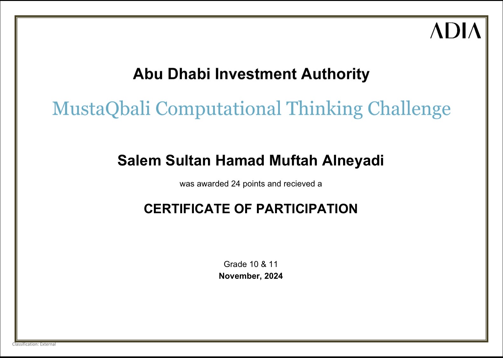

United Arab Emirates University
Critical Thinking
UAEU critical thinking activities are structured learning exercises designed to train students in analyzing complex information, evaluating logic, and solving real-world problems rather than relying on rote memorization. Embedded within the university's General Education Program and academic workshops, these activities use frameworks like the SEE-I method (State, Explain, Exemplify, Illustrate), case study analysis, and structured debates to help students identify assumptions, spot logical fallacies, and evaluate media source credibility. By emphasizing both cognitive skills and intellectual traits like open-mindedness and intellectual humility, UAEU aims to equip students with the analytical mindset necessary for academic success, ethical decision-making, and leadership in a modern knowledge economy.
